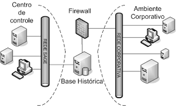

Disciplinas
Segurança da Informação. Concluído
Materiais
[UFMS Digital] Segurança da Informação - Módulo 4 - Unidade 1
Prof° ministrante: Dionisio Machado Leite Filho.
Tratando incidentes.
- Incidente - evento que teste as soluções de segurança em funcionamento em uma rede.
- Um incidente de segurança pode ter um ou mais resultados e, entre as consequências negativas da ocorrência de um incidente, estão a fraude, o vazamento de informações ou a destruição de recursos de uma rede.
- Solução - sistemas de detecção de intrusão (IDSs) e firewall.
- A execução de um processo incomum, usando os recursos da rede (DoS).
- Um padrão nas reclamações de empregados sobre o mau funcionamento do computador.
- Um aumento incomum na solicitação de recursos, resultando na redução de velocidade de uma rede.
- Uma solicitação de autenticação por um endereço IP que não faz parte da rede.
- Segurança em camadas, envolvendo vários controles preventivos.
- Implementação de ferramentas de monitoramento adequadas na rede.
- Armazenamento de arquivos confidenciais em uma área segura.
- Leitura dos registros de sistema para todos os recursos na rede, regularmente, coletando informações de vários registros e comparando-as em busca de possíveis ataques.
Firewall.
Firewall é um mecanismo de segurança realizado em hardware ou software que possui/implementa um conjunto de regras ou instruções.
- Faz a análise do tráfego de rede.
- Determina quais são as operações de transmissão ou recepção de dados que podem ser executadas.
- “Parede de fogo” - barreira de defesa.
- As ações de um firewall têm basicamente duas regras:
- Todo tráfego é bloqueado, exceto o que está explicitamente autorizado;
- Todo tráfego é permitido, exceto o que está explicitamente bloqueado.
- Podem atuar como reforço nos procedimentos de autenticação de usuários.
- Filtragem de pacotes; Firewall de aplicação ou proxy de serviços (Proxy); Filtro de conteúdo.

Antivírus
- Programa de computador que detecta, evita e atua na neutralização ou remoção de programas mal-intencionados, tais como vírus, backdoors, rootkits, trojans, worms, adwares e spywares, entre outros.
- Possui banco de dados próprio, onde estão armazenadas as informações a respeito das ameaças encontradas nos mais diversos ambientes virtuais - assinaturas de vírus.
- Informações atualizadas diária e constantemente, a partir de pesquisa e acompanhamento.
Análise heurística.
- Conjunto de técnicas para identificar vírus desconhecidos.
- Programas maliciosos podem utilizar padrão de nomes de vírus específicos para o que é detectado pela heurística.
- Análise heurística - capacidade de novos vírus serem detectados antes mesmo de o fabricante de antivírus poder detê-los e atualizar o seu programa com as novas informações para a detecção dessa “novidade”.
- Outro método de capturar novos vírus é a verificação de integridade.
Arquivos executáveis.
- Arquivos que realizam comandos.
- Eles não são necessariamente um vírus ou uma ameaça.
- Grande parte dos programas são arquivos executáveis.
- O próprio sistema operacional tem seus programas executáveis.
- As extensões comuns para esses arquivos são EXE, BAT, SCR, DLL e COM.
Funções dos programas antivírus.
- Identificar e eliminar uma boa quantidade de vírus;
- Analisar os arquivos de downloads;
- Verificar continuamente os discos rígidos do computador e mídias removíveis de forma transparente ao usuário;
- Procurar e detectar vírus, spywares e trojans em arquivos anexados aos e-mails;
- Criar um disco de verificação (disco de boot) que poderá ser utilizado caso algum vírus seja mais esperto e anule o antivírus instalado no computador.